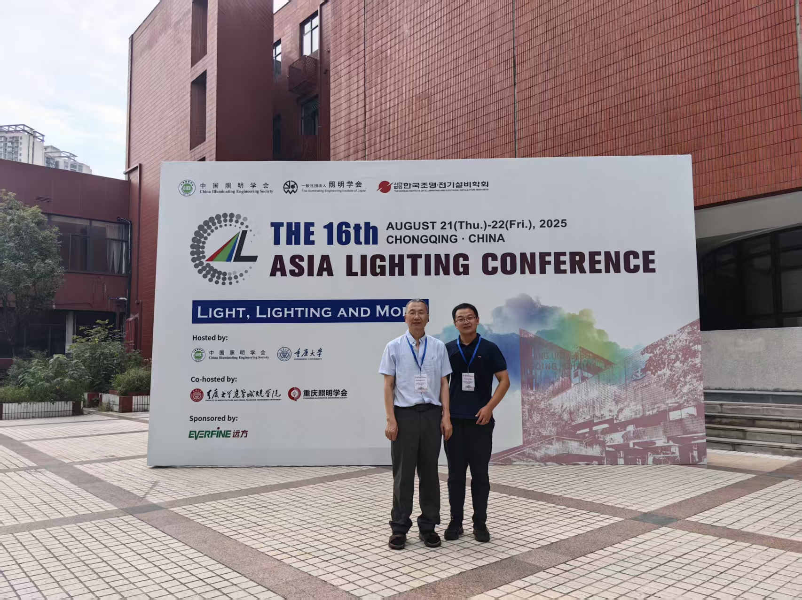
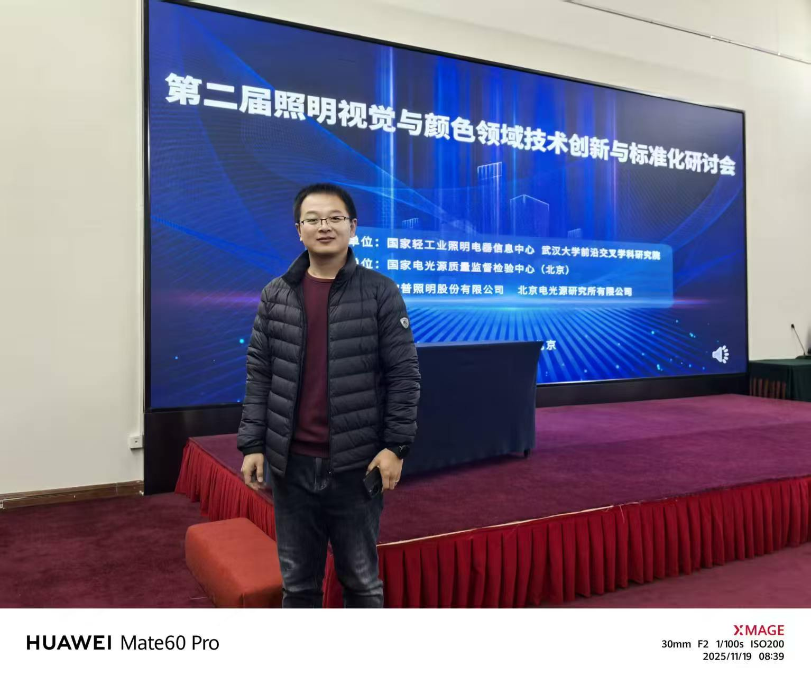
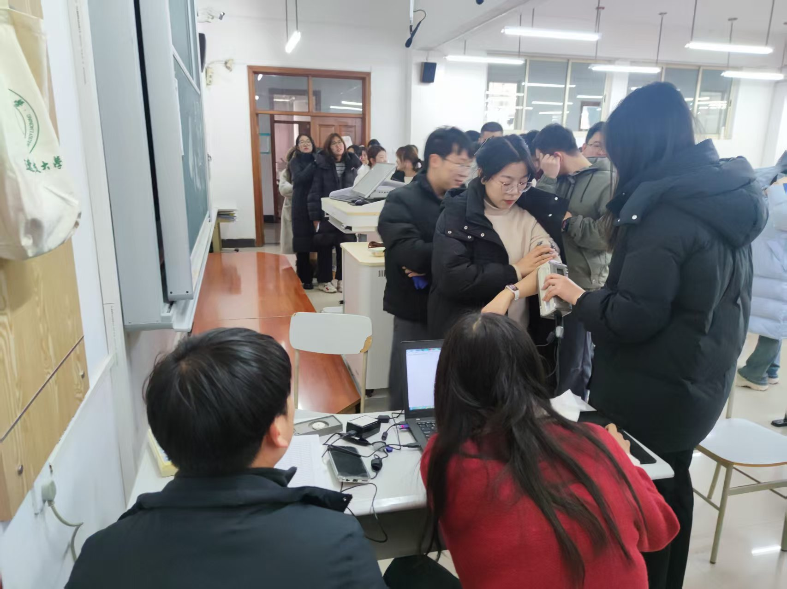
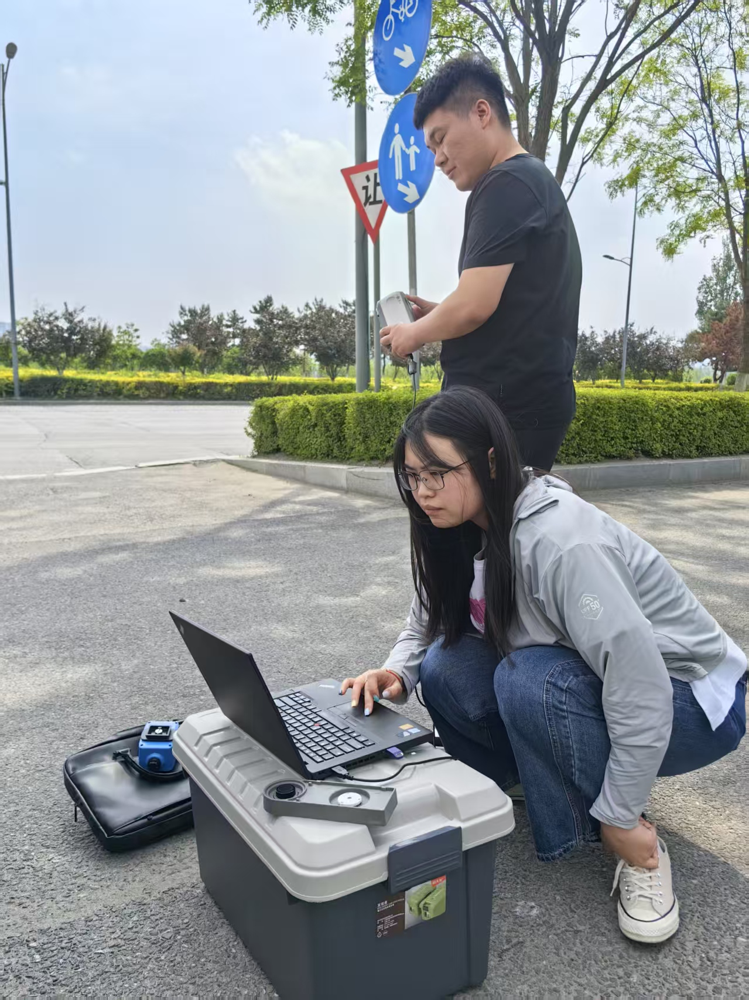
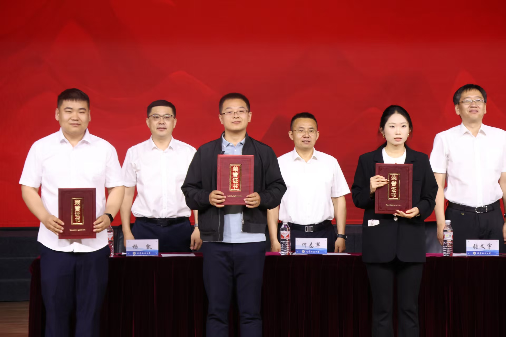

李长军教授在北京理工大学参加颜色与视觉科学国际前沿工业论坛并作大会报告

李长军教授与高程副教授在重庆大学参加第十六届亚洲照明大会
高程导师带领两名硕士生在北京理工大学参加颜色与视觉科学国际前沿工业论坛

高程老师在北京参加第二届照明视觉与颜色领域技术创新与标准化研讨会

课题组与利兹大学联合采集皮肤光谱反射率

基于植物照明研究课题采集植物叶片光谱反射率

高程老师撰写关于CIECAM16的博士学位论文，获评辽宁省优秀博士学位论文